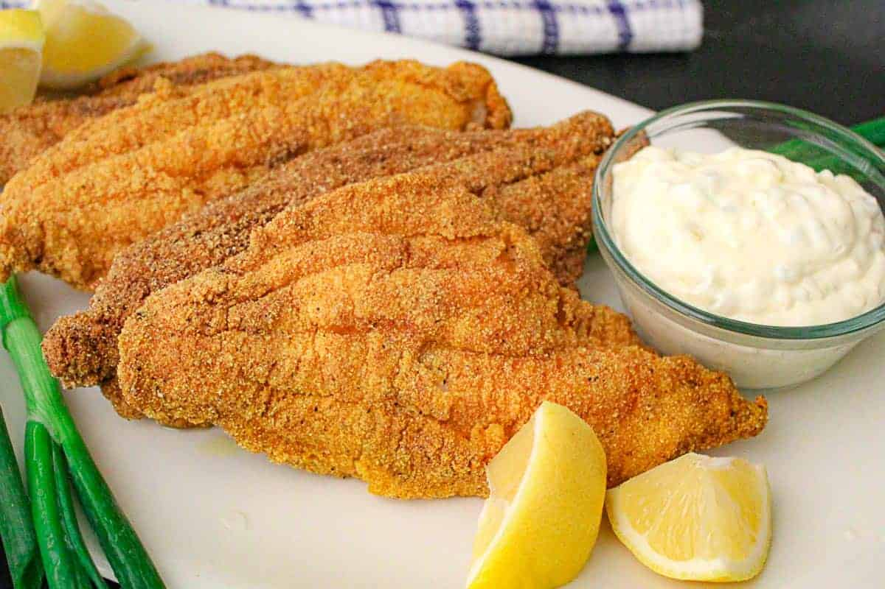

Catfish

Description
This recipe covers how to properly fry a catfish.
Ingredients
- Catfish fillet
- Salt
- Pepper
- Cumino
- Lemon
- Vegetable oil
- Butter (tbs)
Steps
- Season salmon with seasonings listed above and let sit or at least 10 min
- Heat up pan to medium heat
- Pour vegetable oil and butter on pan and move pan around till they are mixed together
- Place salmon on pan and let cook for 5 min with the scales down
Back to Main